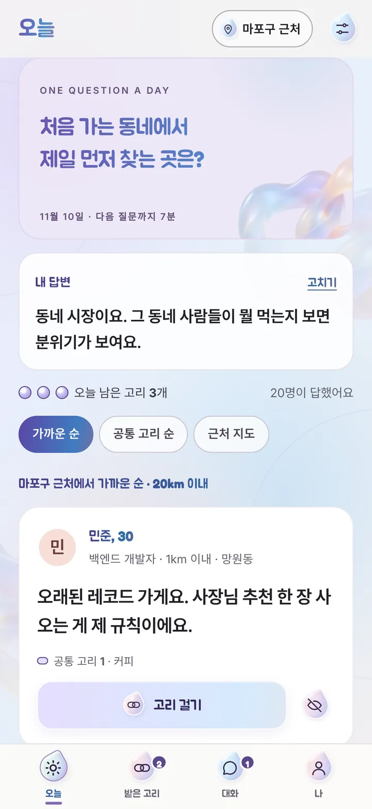
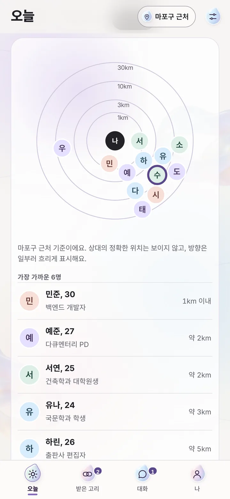
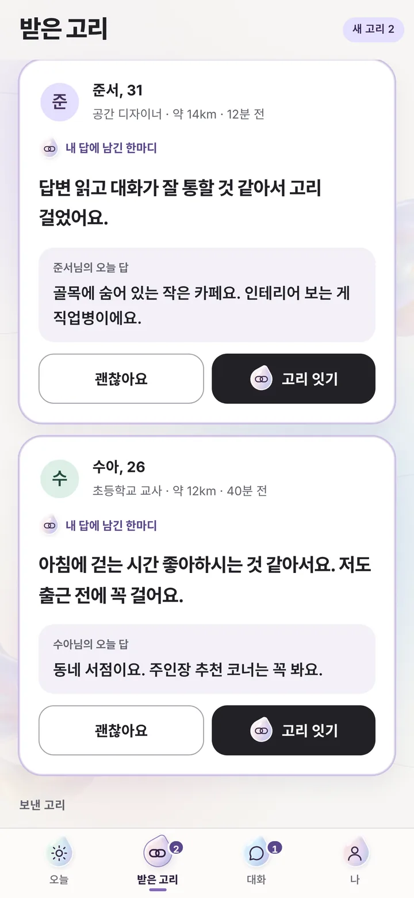
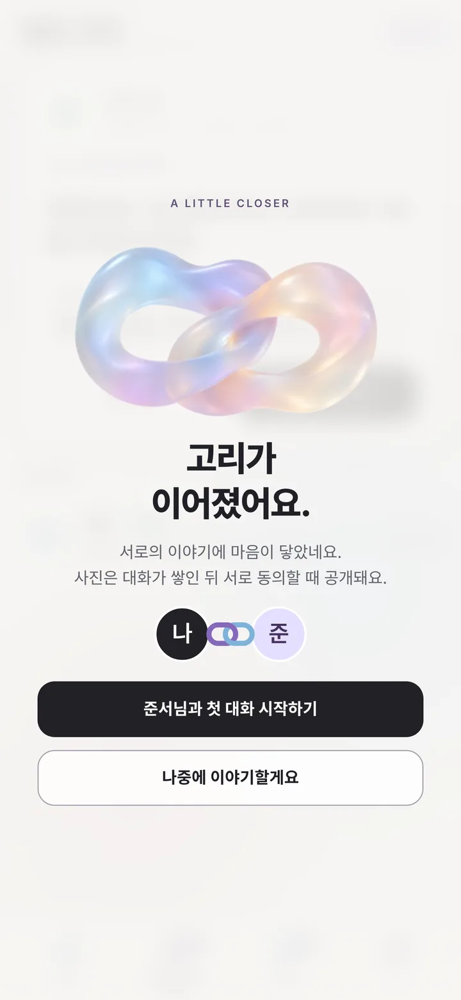
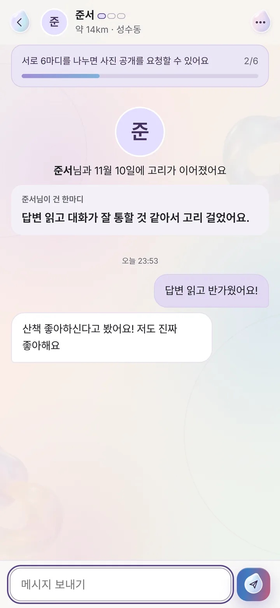

오늘의 질문에 답해요
짧아도 괜찮아요. 내 답이 곧 내 첫인상이 됩니다.
오늘의 질문으로 만나는 근처 인연
말에서 시작되는 우리의 연결. 매일 하나의 질문에 답하면 근처 사람들의 답이 열려요. 사진보다 먼저, 서로의 이야기를 나눠요.
Scroll
예시 답변
답을 남기면 근처 사람들의 답이 열려요
01 · Today's question
매일 같은 질문이 모두에게 열려요. 내 답을 먼저 남겨야 근처 사람들의 답을 볼 수 있어서, 사진을 넘기는 대신 말을 읽게 됩니다.
02 · How it links
고리는 '이 답, 좋았어요'라는 신호예요. 두 사람이 서로 고리를 걸어야만 대화가 열립니다.

짧아도 괜찮아요. 내 답이 곧 내 첫인상이 됩니다.

가까운 순으로, 거리는 구간으로만 보여요. 정확한 위치는 누구에게도 보이지 않아요.

한마디를 붙여서 보내요. 무료로 하루 3번.

상대도 내 답에 고리를 걸면 두 고리가 이어지고 대화가 열립니다.

서로 여섯 마디를 나누고, 두 사람 모두 동의해야 사진이 공개돼요.
앱 화면 속 인물은 모두 예시입니다.
03 · Near, not exact
휴대폰의 현재 위치로 근처 사람을 찾지만, 위치는 약 1km 칸으로 뭉개서 저장해요. 상대에게는 거리 구간과 30도 단위로 흐린 방향만 보입니다.
04 · Safety by design
생년월일로 만 19세 미만은 가입할 수 없어요.
대화를 나누고 두 사람이 모두 동의해야 사진이 보여요.
불쾌한 상대는 바로 신고·차단하고, 신고는 24시간 안에 검토해요.
앱 안에서 바로 삭제하면 답변·대화·사진이 함께 지워져요.
05 · Pricing
0원
14,900원 / 월
3개월 35,700원 · 고리 5개 4,900원. 첫 버전은 모든 기능을 무료로 열어 두고, 플러스는 다음 업데이트에서 시작해요.
Coming to the App Store
iPhone용 연결고리가 곧 App Store에 올라가요. 출시 소식과 문의는 아래 주소로 보내 주세요.
help@yeonlink.comSupport
문의는 help@yeonlink.com으로 보내 주세요. 영업일 기준 1일 안에 답장하고, 신고는 24시간 안에 검토해요.
앱의 나 탭 아래쪽 계정 → 계정 삭제에서 바로 지울 수 있어요. 답변, 고리, 대화, 사진이 모두 함께 삭제되고 되돌릴 수 없어요.
보이지 않아요. 위치는 약 1km 칸으로 뭉개서 저장하고, 다른 사람에게는 '약 3km' 같은 거리 구간과 흐린 방향만 표시돼요. 설정에서 위치 사용을 끌 수도 있어요.
고리로 이어진 상대와 서로 여섯 마디 이상 나눈 뒤, 두 사람이 모두 공개에 동의해야 보여요.
프로필이나 대화방 오른쪽 위 메뉴에서 신고·차단을 눌러 주세요. 차단하면 서로의 답과 대화가 즉시 보이지 않고, 신고는 24시간 안에 검토해요.
만 19세 이상이면 이메일로 가입할 수 있어요. 지금은 대한민국에서만 이용할 수 있어요.
첫 버전은 무료예요. 이후 플러스 구독(월 14,900원)이 추가되어도 답변, 하루 고리 3개, 대화, 신고·차단은 계속 무료입니다.